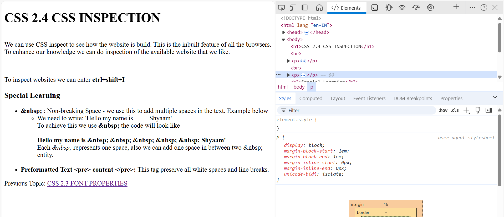
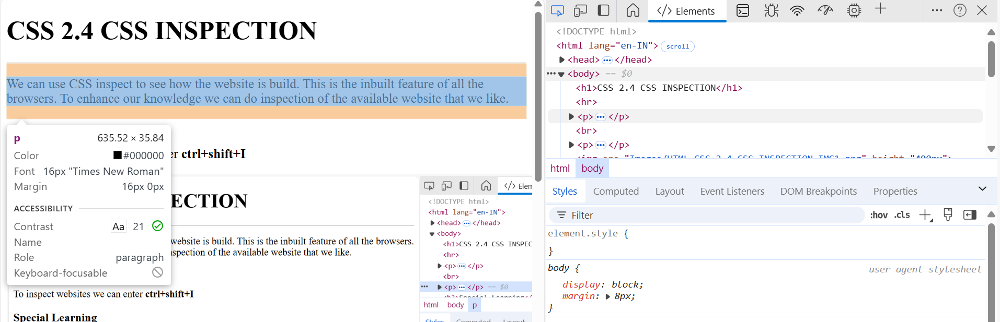
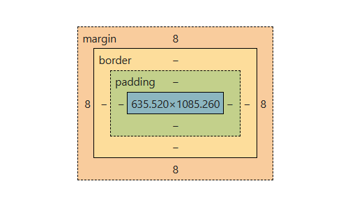

CSS 2.4 CSS INSPECTION
We can use CSS inspect to see how the website is build. This is the inbuilt feature of all the browsers.
To enhance our knowledge we can do inspection of the available website that we like.
To inspect websites we can press ctrl+shift+I

CSS OVERVIEW: To see what all css styling is applied on the website. - Inspection -> More Options -> CSS OVERVIEW
The Box Model
Everything on the wesbite, i.e each html element is contained in a box/rectangular shape.

This box has:
- Content: A piece of text, image, table, video, etc. at the center.
- Padding: Surrounding the content there is a padding that pushes the border away from the content.
- Syntax-<span style=padding:top-padding right-padding bottom-padding left-padding; > content </span>
-
Border:There is always a visible or non visible lining around the content, i.e., The Border. In the below example Padding is 0px by default.
- Syntax-<span style=border-style:AnyStyle;border:top-bottom-border-thickness right-left-border-thickness; > content </span>
-
Margin: Margin seperates the element from other elements.
Syntax:<div style="margin:20px"> content </div>
Here we cannot use span tag as span is an inline-Block element, and inline elements do not respect verticle margins.

Special Learning
- : Non-breaking Space - we use this to add multiple spaces in the text. Example below
- We need to write: 'Hello my name is Shyaam'
To achieve this we use the code will look like
Hello my name is Shyaam'
Each represents one space, also we can add one space in between two entity.
- Preformatted Text <pre> content </pre>: This tag preserve all white spaces and line breaks.
Previous Topic: CSS 2.3 FONT PROPERTIES
Next Topic: CSS 2.5 Mini Project